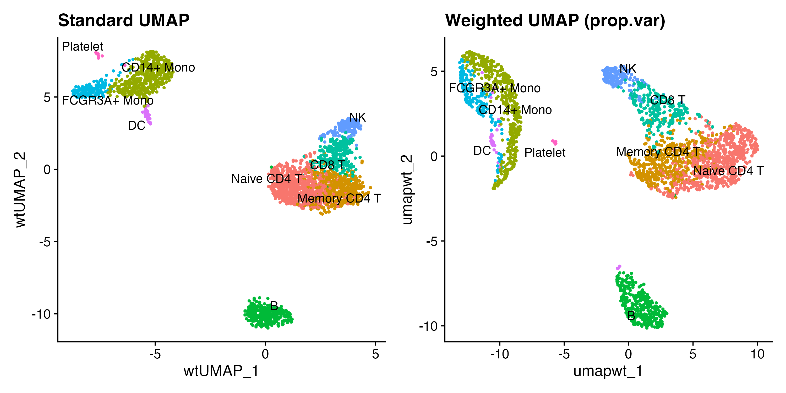
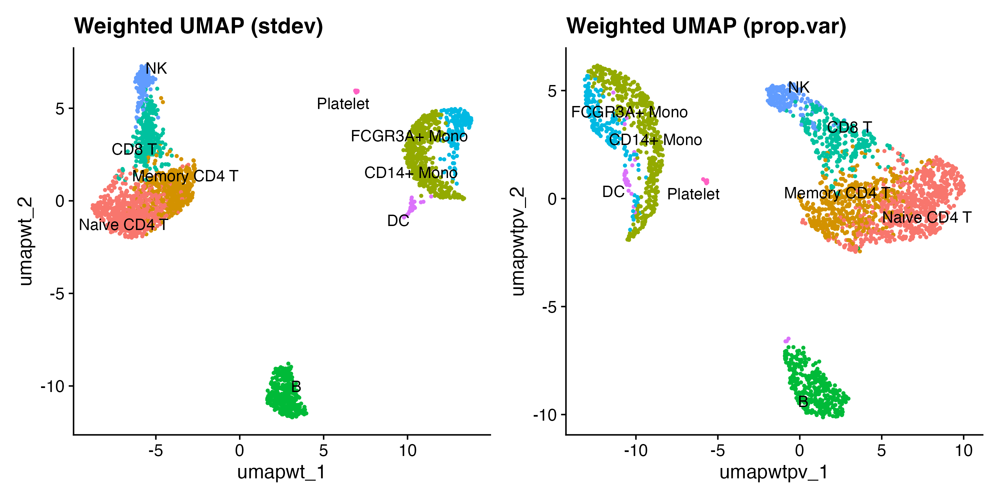
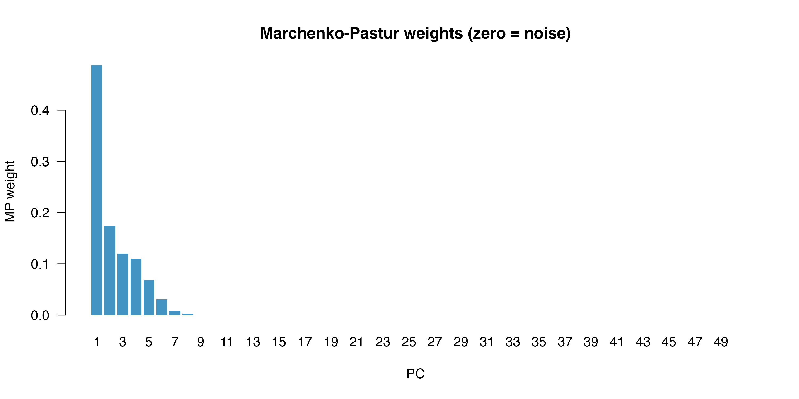
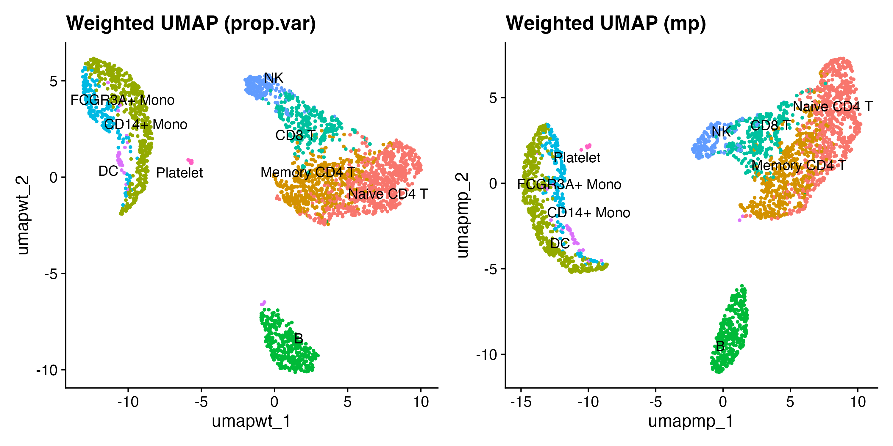
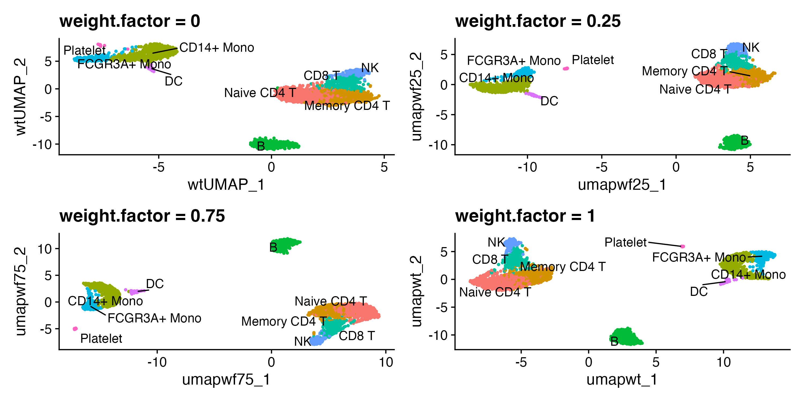
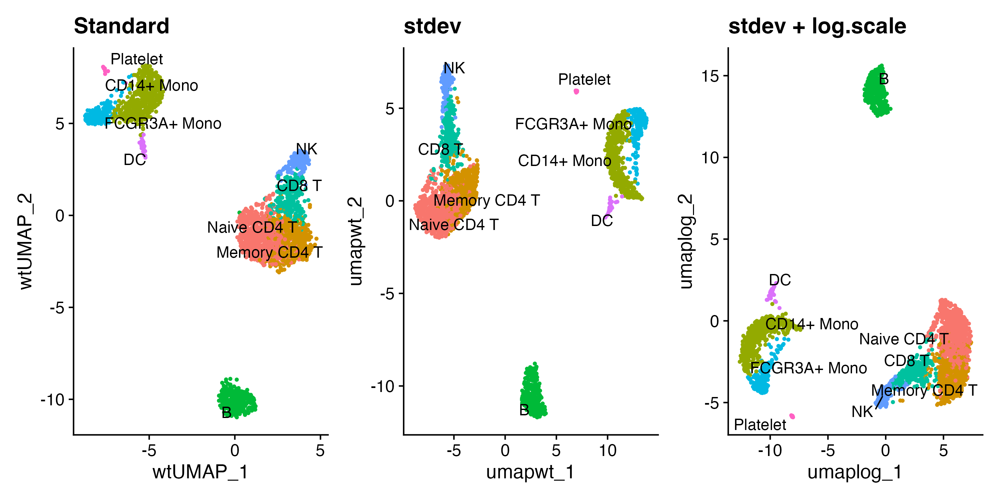
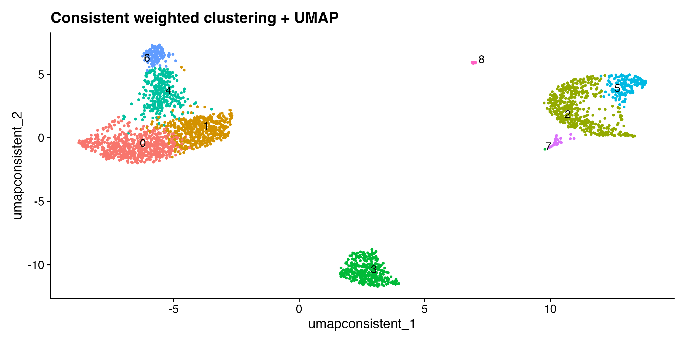
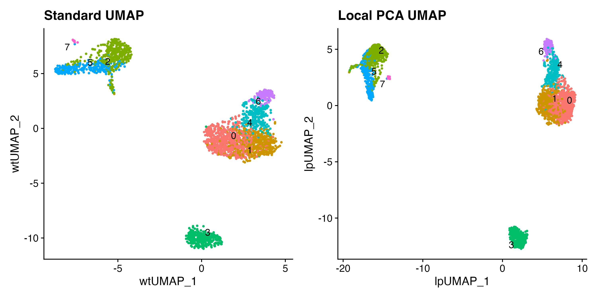

Overview
When running UMAP on PCA coordinates, every PC is given equal weight in the Euclidean distance. This is a reasonable default, but there are two distinct situations where modifying the input metric may be worth trying:
1. Noisy late PCs deserve less weight — or none at
all. PCA orders components by variance, so later PCs contain
progressively less signal and more technical noise. Passing
dims = 1:30 to RunUMAP() already addresses
this coarsely by discarding the noisiest PCs. The
mp.filter = TRUE flag refines this by applying the
Marchenko-Pastur law from random matrix theory, which
gives a data-driven cutoff
— PCs whose variance falls below that threshold are zeroed out
automatically. This is the most principled feature in the package,
though it is still an approximation (the MP law is exact for i.i.d.
Gaussian matrices; log-normalised scRNA-seq data violates those
assumptions).
2. Distances within a neighbourhood may be dominated by a
single direction. Standard UMAP uses a single global metric.
RunLocalPCAUMAP() instead measures the distance between
each cell and its neighbours in a locally-fitted PCA basis, projecting
displacements onto the dominant directions of variation in that
neighbourhood. This has geometric motivation for manifold-structured
data. Whether it improves clustering in practice is dataset-dependent
(see the Benchmark vignette).
What is purely heuristic: The global weighting
schemes weight.by = "stdev" and
weight.by = "prop.var" continuously rescale PC coordinates
by their variance contribution. Unlike mp.filter, these are
not derived from any statistical threshold — they are dials for
exploring how much emphasis to place on early PCs. The default
weight.by = "stdev" applies the mildest transformation. If
you are unsure which to use, start with mp.filter = TRUE
(principled exclusion of noise PCs) and the local PCA approach before
experimenting with the weighting dials.
Data
We use the classic PBMC 3k dataset from SeuratData,
which includes PCA, cell-type annotations, and standard clustering
already applied.
data(pbmc3k.final)
pbmc <- UpdateSeuratObject(pbmc3k.final)
Idents(pbmc) <- "seurat_annotations"Standard vs weighted UMAP
RunWeightedUMAP() is a drop-in replacement for
RunUMAP(). Setting weight.by = "none"
reproduces the standard result; the default
weight.by = "stdev" scales each PC by its normalised
standard deviation.
set.seed(42)
pbmc <- RunWeightedUMAP(pbmc, dims = 1:50, weight.by = "none",
reduction.name = "umap.std", verbose = FALSE)
pbmc <- RunWeightedUMAP(pbmc, dims = 1:50,
reduction.name = "umap.wt", verbose = FALSE)
p1 <- DimPlot(pbmc, reduction = "umap.std", label = TRUE, repel = TRUE) +
ggtitle("Standard UMAP") + NoLegend()
p2 <- DimPlot(pbmc, reduction = "umap.wt", label = TRUE, repel = TRUE) +
ggtitle("Weighted UMAP (stdev)") + NoLegend()
p1 | p2
Left: standard UMAP. Right: stdev-weighted UMAP.
Weighting schemes
Three schemes are available via weight.by:
| Value | Weight formula | Effect |
|---|---|---|
"stdev" |
Default. Mildest transformation; early PCs weighted slightly more heavily. | |
"prop.var" |
Stronger up-weighting; use with weight.factor < 1 on
PC-1-dominated data. |
|
"none" |
Standard UMAP (equal weights). |
The optional mp.filter = TRUE flag applies the
Marchenko–Pastur (MP) law from random matrix theory to
determine which PCs carry genuine signal. Given
cells and
features, the theoretical noise ceiling is
PCs whose variance
are zeroed out after the base weights are computed, then the
remaining weights are renormalised. It works with any
weight.by scheme.
pbmc <- RunWeightedUMAP(pbmc, dims = 1:50, weight.by = "prop.var",
reduction.name = "umap.wt.pv", verbose = FALSE)
p3 <- DimPlot(pbmc, reduction = "umap.wt.pv", label = TRUE, repel = TRUE) +
ggtitle("Weighted UMAP (prop.var)") + NoLegend()
p2 | p3
stdev (default) vs prop.var weighting.
Marchenko–Pastur filtering
mp.filter = TRUE uses random matrix theory to identify
PCs that carry genuine signal above the noise floor predicted for a
random matrix of the same dimensions. Only those PCs receive non-zero
weight; the remainder are zeroed out regardless of the base weighting
scheme.
pbmc <- RunWeightedUMAP(pbmc, dims = 1:50, mp.filter = TRUE,
reduction.name = "umap.mp", verbose = FALSE)We can inspect how many PCs were retained (non-zero weight):
mp_weights <- Misc(pbmc[["umap.mp"]])$weights
cat(sprintf("%d / %d PCs above noise floor (non-zero weight)\n",
sum(mp_weights > 0), length(mp_weights)))
#> 8 / 50 PCs above noise floor (non-zero weight)
barplot(mp_weights, names.arg = seq_along(mp_weights),
xlab = "PC", ylab = "stdev weight (after MP filtering)",
main = "Weights after Marchenko-Pastur filtering (zero = noise)",
col = ifelse(mp_weights > 0, "#4393C3", "#D1D1D1"),
border = NA, las = 1)
p_mp <- DimPlot(pbmc, reduction = "umap.mp", label = TRUE, repel = TRUE) +
ggtitle("Weighted UMAP (stdev + mp.filter)") + NoLegend()
p2 | p_mp
stdev weighting vs stdev + MP filtering.
Blending with weight.factor
weight.factor (0–1) continuously blends between the
unweighted (0) and fully weighted (1)
embedding:
pbmc <- RunWeightedUMAP(pbmc, dims = 1:50, weight.by = "stdev",
weight.factor = 0.25, reduction.name = "umap.wf25",
verbose = FALSE)
pbmc <- RunWeightedUMAP(pbmc, dims = 1:50, weight.by = "stdev",
weight.factor = 0.75, reduction.name = "umap.wf75",
verbose = FALSE)
pa <- DimPlot(pbmc, reduction = "umap.std", label = TRUE, repel = TRUE) +
ggtitle("weight.factor = 0") + NoLegend()
pb <- DimPlot(pbmc, reduction = "umap.wf25", label = TRUE, repel = TRUE) +
ggtitle("weight.factor = 0.25") + NoLegend()
pc <- DimPlot(pbmc, reduction = "umap.wf75", label = TRUE, repel = TRUE) +
ggtitle("weight.factor = 0.75") + NoLegend()
pd <- DimPlot(pbmc, reduction = "umap.wt", label = TRUE, repel = TRUE) +
ggtitle("weight.factor = 1") + NoLegend()
(pa | pb) / (pc | pd)
weight.factor controls the blend between standard and fully weighted.
Log-scale weights
For datasets where PC 1 explains dramatically more variance than all
others, log.scale = TRUE first applies log1p()
to the weights before normalising. This compresses the dynamic range so
intermediate PCs still contribute to the layout.
pbmc <- RunWeightedUMAP(pbmc, dims = 1:50, weight.by = "stdev",
log.scale = TRUE, reduction.name = "umap.log",
verbose = FALSE)
DimPlot(pbmc, reduction = "umap.std", label = TRUE, repel = TRUE) + ggtitle("Standard") + NoLegend() |
DimPlot(pbmc, reduction = "umap.wt", label = TRUE, repel = TRUE) + ggtitle("stdev") + NoLegend() |
DimPlot(pbmc, reduction = "umap.log", label = TRUE, repel = TRUE) + ggtitle("stdev + log.scale") + NoLegend()
Standard (left), stdev weighted (centre), log-scaled stdev weights (right).
Consistent clustering and UMAP with
RunWeightedNeighbors()
A common pitfall: clustering on one KNN graph while visualising on
another. RunWeightedNeighbors() stores the weighted
embedding and builds both the KNN and SNN graphs in one step, so
clustering and UMAP share exactly the same nearest-neighbour
structure.
pbmc <- RunWeightedNeighbors(pbmc, dims = 1:50, prefix = "wt", verbose = FALSE)
pbmc <- FindClusters(pbmc, graph.name = "wt_snn", resolution = 0.5,
verbose = FALSE)
pbmc <- RunWeightedUMAP(pbmc, graph = "wt_nn", reduction.name = "umap.consistent",
verbose = FALSE)
DimPlot(pbmc, reduction = "umap.consistent", label = TRUE, repel = TRUE) +
ggtitle("Consistent weighted clustering + UMAP") + NoLegend()
Clustering and UMAP both derived from the same weighted KNN graph.
Local PCA UMAP
RunLocalPCAUMAP() takes a different approach to
modifying the input metric. Rather than rescaling PC axes globally, it
measures the distance between every pair of neighbours in a
locally-fitted PCA basis — projecting displacements
onto the directions of greatest variance within each cell’s
neighbourhood. The projection step itself (without any weighting) has
geometric motivation for manifold-structured data. The optional
local.weight.by re-weighting of local PC directions is an
additional heuristic layered on top, analogous to the global
weight.by schemes.
The local.weight.by parameter (default
"stdev") additionally weights each local PC direction by
its contribution to local variance, analogous to how
weight.by weights global PCs.
Algorithm:
- Find the global nearest neighbours of every cell in PCA space (RANN).
- For each cell , centre its -neighbourhood and compute a compact SVD.
- Optionally weight the
local.dimsprincipal directions by their local variance contribution (local.weight.by). - Re-express displacement vectors to neighbours in that weighted local basis.
- Report the Euclidean norm as the refined distance and pass the
distance matrix to
uwot::umap.
For consistent clustering and UMAP topology, use
RunLocalPCANeighbors() to build the KNN/SNN graphs first,
then RunLocalPCAUMAP() with matching parameters.
set.seed(42)
# Build local PCA KNN/SNN graphs (stdev weighting — default)
pbmc <- RunLocalPCANeighbors(pbmc, dims = 1:30, k.param = 30,
prefix = "lp", verbose = FALSE)
# Cluster on the local PCA SNN graph
pbmc <- FindClusters(pbmc, graph.name = "lp_snn", resolution = 0.5,
verbose = FALSE)
# UMAP with matching local PCA distances
pbmc <- RunLocalPCAUMAP(pbmc, dims = 1:30, k.param = 30,
reduction.name = "lp.umap", verbose = FALSE)
p_std <- DimPlot(pbmc, reduction = "umap.std", label = TRUE, repel = TRUE) +
ggtitle("Standard UMAP") + NoLegend()
p_lp <- DimPlot(pbmc, reduction = "lp.umap", label = TRUE, repel = TRUE) +
ggtitle("Local PCA UMAP (stdev)") + NoLegend()
p_std | p_lp
Standard UMAP (left) vs local PCA UMAP with stdev weighting (right).
The local PCA approach can sometimes reveal trajectory-like structure more clearly than standard UMAP, but on datasets with broadly isotropic neighbourhoods the improvement may be small. See the benchmark vignette for a quantitative comparison.
Further reading
For a quantitative evaluation of all weighting schemes (including
"mp" and RunLocalPCAUMAP) against an
independent protein-based ground truth (cbmc CITE-seq), see the Benchmark article.